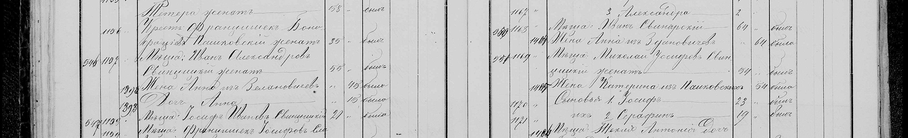
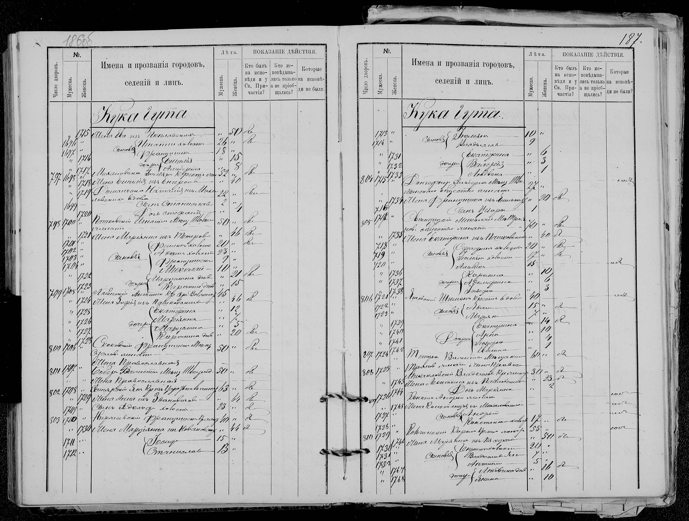
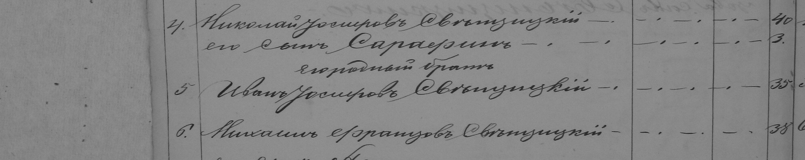
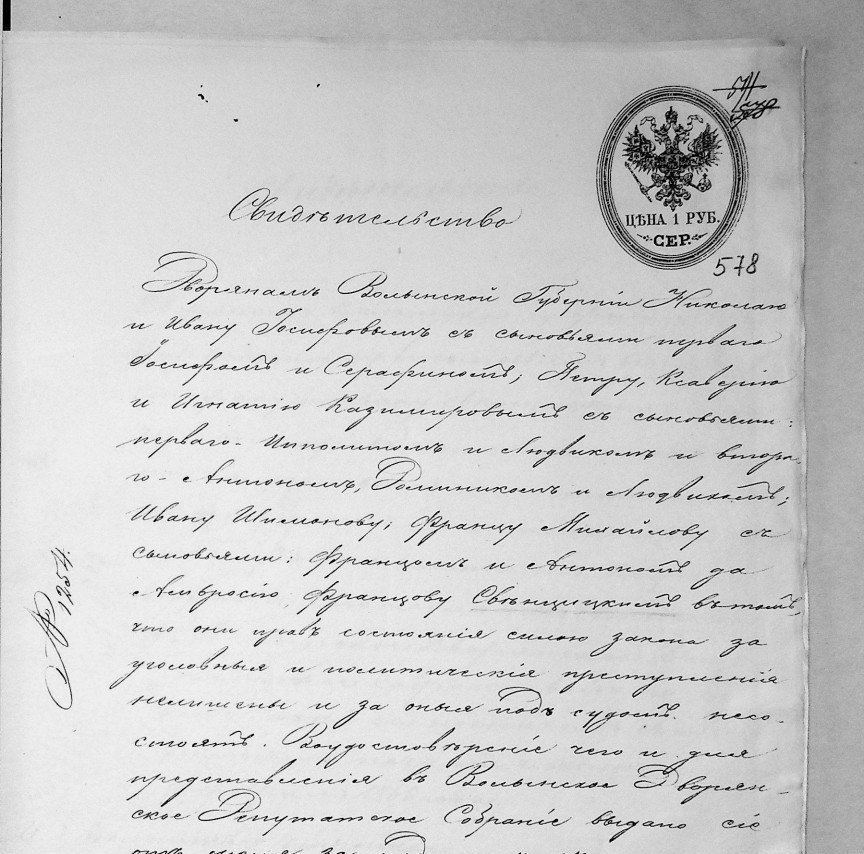
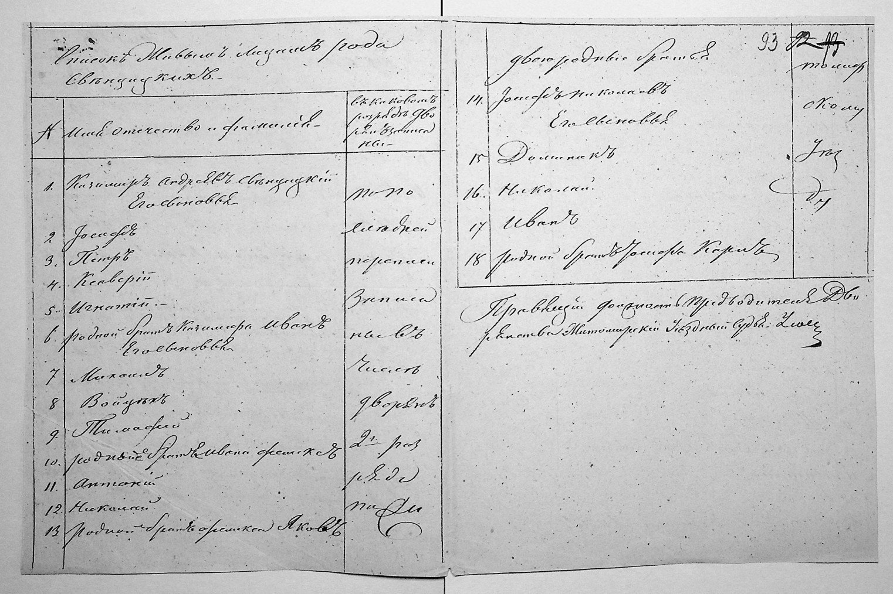

Family¶
Hypotheses¶
Миколай Йосипович Свінціцький (, двір 1169 у сповідному розписі 1883; у ревізькій казці 118-14-78 — 40 років із сином Серафином) — рідний брат Яна (, Івана Йосиповича, двір 1135)Closed · H0007 Серафим Свінціцький, селянин Трояновської волості з Гути Кука (дружина Ева з Писовацьких, дочка народилась 28.XI.1893), — той самий Серафин, син Миколая Йосиповича (, ≈1861 р.н.), або близький...Open — searching · H0011 Свінціцькі з Кука-Гути, Клярівки й Катерінівки у сповідному розписі 1884–85 (ЦДІАК 1045-2-703): Миколай з Катериною з Пашковських і дітьми (двір 805), Іосиф з Аполонією (двір 790) — родина Миколая...Open — searching · H0021 У дворянському доказі роду Свінціцьких (ДАЖО 146-1-452, Родовідна книга Волинської губернії ч. 1, літера С, рішення Волинського дворянського депутатського зібрання 1.XII.1802 №774) Миколай, син...Closed · H0025 Józef Swiniecki, żonaty, записаний під заголовком «Huta Kuka» (Кука-Гута) на листку 1891 р. у ЦДІАК 1045-2-693 (скан 0782), — Іосиф ≈1862 р.н., син Миколая (, Кука-Гута, двір 790, жонатий, розпис...Open — searching · H0037 Записи хрещень 1866–1868 у ДАЖО 178-3-150 (Новоград-Волинський костел) доповнюють діти трьох родин Свінціцьких: Іосиф (14.02.1868) і Текля (29.11.1868) — діти Яна і Марцеліни; Юліан (10.04.1868) —...Open — searching · H0040 Записи хрещень 1863–1869 у ДАЖО 178-3-150 (Новоград-Волинський костел) з прізвищем Свѣнцицкій — діти й воспріємники ще не зв'язаних родин: Казимир і Маріанна з Яндольських (Гута Середня), Антоній...Open — searching · H0042
Life¶
-
calc. 1829
Birth1

- c. 1883 Residence · Кука-Гута1 сповідний розпис, двір 1169; міщанин; дружина Катерина з Пашковських (54); сини Йосиф (23), Серафин (19)
-
between 1884 – 1885
Residence · Кука-Гута2 · hypothesis
Кука-Гута, двір 805, сповідний розпис 1884–1885: Миколай, міщанин Трояновського общества, жонатий, вік читається 41 (нечітко); жінка Катерина з Пашковських 40; сини Серафин 20, Костян 17, Альбін 15; доньки Кароліна 10, Адольфіна 6, Юзефа 3

- 21 October 1884 Event3 · hypothesis H0007 можливо, свідок шлюбу в Чуднівському костелі (Николай Свѣнцицкій); тотожність не встановлена
-
undated
Event4
ревізька казка Житомирського повіту; 40 років; син Серафин 3 роки; «родной брат» Іван Йосипович (35)

-
undated
Event5
дворянин Волинської губ.; з синами Йосифом і Серафином — свідоцтво предводителя дворянства 15.II.1865

-
undated
Event5
Николай — син Іосифа Николаева, брат Доминика й Ивана — за списком живих осіб роду



Names in the sources¶
- Миколай Иосифович Свинцицкий ru
- Николай Іосифовъ Свѣнцицкій ru
- Микола Йосипович Свінціцький uk
Documents¶
Media¶
- ДАЖО 118-14-78, скан 0856 — ревізька казка, Николай Іосифовъ Свѣнцицкій, «родной брат» Иванъ Іосифовъ Свѣнцицкій — локальне фото
31358220d569… - Сповідний розпис, ЦДІАК 1045-2-701, скан 0444 — двір 1169, Миколай Йосипович Свінціцький — локальне фото
b9853372a3bc… - ДАЖО 146-1-5320, скан 0538 (арк. 578) — свідоцтво від 15.II.1865 про дворян Свѣнцицкихъ — локальне фото
1b52de84bdaa… - ЦДІАК 1045-2-703, скан 0907 (цілий розворот) — Кука-Гута, двір 805: Миколай Свінціцький з Катериною з Пашковських і діти, 1884–85 — локальне фото
e595647fe872…
Notes¶
Рідний брат Яна (Ян Свінціцький), син Иосифа (Иосиф Свинцицкий): Николай (рядок 16) зі списку живих осіб роду Свѣнцицкихъ — він, рішення дослідника 2026-11-07, H0007. Дружина Катерина з Пашковських і сини Йосиф та Серафин названі лише в розписі 1883, окремих карток для них немає.
-
Сповідний розпис римо-католиків Новоград-Волинського костелу, 1883 (в описі — «Метрична книга Новоград-Волинського костелу») ↩↩
-
Сповідні розписи римо-католиків Новоград-Волинського костела за 1884–1885 рр. ↩
-
Метрична книга Чуднівського римо-католицького костелу. Шлюби, 1863–1888 ↩
-
Додаткові ревізькі казки Житомирського повіту (за назвою файлу — 1864–1870) ↩
-
Справа про дворянське походження Свѣнцицкихъ (Житомирський повіт), 1860–1865 ↩↩